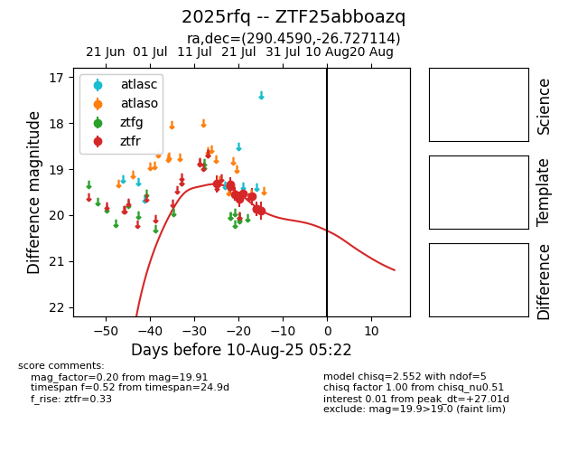

Target 2025rfq at 2025-08-10 05:22, see:
FINK: fink-portal.org/2025rfq
Lasair: lasair-ztf.lsst.ac.uk/objects/2025rfq
ALeRCE: alerce.online/object/2025rfq
TNS: wis-tns.org/object/2025rfq
YSE: ziggy.ucolick.org/yse/transient_detail/2025rfq
alt names
ZTF25abboazq (ztf,fink)
2025rfq (tns,yse)
coordinates:
equatorial (ra, dec) = (290.4590,-26.72711)
galactic (l, b) = (11.5626,-18.07124)
photometry
last ztfr=19.91
10 ztfr detections
